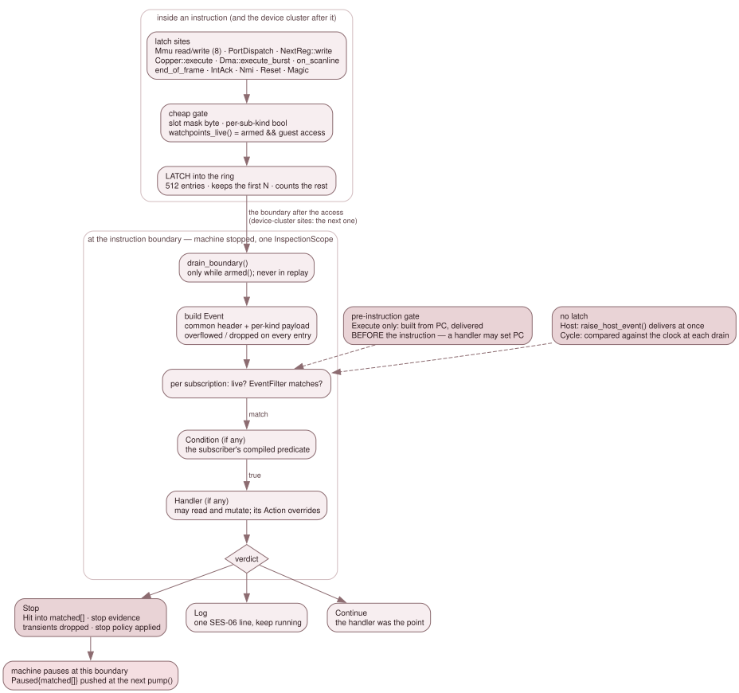

3.9.2 Event delivery and mutation¶
Breakpoints, watchpoints, script rules, DeZog's temporary breakpoints and the recorder's frame hook are all one thing in the backend: a subscription to an event. This page describes how an event gets from the place it happens to the subscriber, and what a subscriber, or any other frontend, may write.
The whole pipeline fits in one sentence:
A site inside an instruction latches; a boundary with the machine stopped delivers.
No subscriber code runs inside Mmu::write, the CPU or a device tick. That is
what makes "an inspection read has no side effects" a property of the code
rather than of the caller's discipline.

Above the boundary a site only latches. Below it, with the machine stopped,
each latched entry becomes an Event and runs through every live
subscription's filter, condition and handler.
Subscriptions¶
A Subscription (events.h) is:
| Field | Meaning |
|---|---|
kind |
one of the fourteen EventKinds (below) |
filter |
an EventFilter: the cheap, hot-path-testable half — an address or Copper-PC range, an optional page qualifier, a page set, a port mask and value, a NextREG set, a source, a frame, a scanline, a cycle, a reset kind, a sub-kind, a host-event name |
access |
for Mem and Port, which directions to watch |
condition |
optional Condition, bool(const Event&, const Debugger&): a predicate the subscriber compiled. It may read the whole inspection surface and nothing else |
handler |
optional Handler, Action(const Event&, Debugger&): the subscriber's body. It may read and mutate, and its return value overrides action |
once |
disable after the first accepted firing (filter matched and condition passed) |
transient |
exempt from the master switch, removed at the next stop, hidden from user lists, unlimited in number |
action |
the static verdict: Stop, Log or Continue |
enabled |
the subscription's own flag |
The owner is the ClientId that called subscribe(). subscriptions()
reports a SubscriptionInfo per entry, which says whether a condition and a
handler are present but never hands the closures out: they capture the
subscriber's interpreter state.
A subscription is live when enabled && (transient || master) &&
client_enabled(owner). EventTable (src/debug/event_table.*) caches that
as one bool per entry and recomputes it whenever anything changes, never per
instruction. transient is exempt from the master switch so that Step Over and
Run to Here keep working on a machine whose breakpoints the user has all
suspended.
A live subscription is delivered only while the machine is armed (3.9.4). An unarmed machine skips the boundary drain altogether. That is why a GUI breakpoint, owned by a non-arming observer client, fires only while something else arms the machine.
The fourteen kinds, and when each is delivered¶
Execute is the only kind delivered before its instruction runs. The
pre-instruction gate in run_frame() builds the event from PC and delivers it
at once, which is what lets a handler write PC and redirect execution. Every
other kind is delivered at an instruction boundary:
| Kind | Latched at | Delivered | Late by |
|---|---|---|---|
Execute |
— (the pre-instruction gate) | before the instruction | — |
Mem |
one of the eight Mmu read/write sites |
the raising instruction's own boundary | nothing |
Port |
PortDispatch, after the dispatch, so a read carries the value the guest got |
same | nothing |
Dma (Start, Byte, End) |
Dma::execute_burst() |
the boundary of the slot the burst ran in | nothing |
NextRegWrite, CPU writer |
NextReg::write |
the next boundary | ≤1 instruction |
NextRegWrite, Copper writer, and Copper (Move, Wait, Halt) |
Copper::execute() |
the next boundary | ≤1 instruction |
Scanline |
on_scanline, with the line's own boundary cycle |
the next boundary | ≤1 instruction |
Frame |
end_of_frame() |
at that frame edge, before its tick_auto_type() |
nothing |
IntAck, Nmi |
the CPU's accept seams | the boundary | nothing |
Reset |
soft_reset(), or the backend after a hard reconstruct |
the next drain | — |
Magic |
the magic-opcode hook | the boundary | nothing |
Cycle |
— (compared with the master clock at each drain while one is armed) | the first boundary with master_cycle >= cycle |
— |
Host |
— (raise_host_event() delivers it synchronously) |
at the call | — |
The "≤1 instruction" entries are all one fact. The boundary drain runs
before tick_devices_after_instruction(), and that is where the Copper and
the deferred CPU NextREG queue run. Moving the drain behind the device cluster
would change the GH #265 early-return contract for every data breakpoint, so
the delay is accepted and stated instead. A CPU NextRegWrite's payload still
names the writer's PC.
DMA is not late. A burst runs from dma_.execute_burst() inside
step_one_instruction(), before that slot's drain, so a Dma event, and the
Mem and Port events of its own bytes, arrive at that slot's boundary like
the CPU's own accesses. A slot is DMA or CPU, never both. A DMA NextREG write is
late, because it goes through the same deferred queue as a CPU one.
A Copper MOVE is one latch entry. The drain fans it out to both
Copper{Move} and NextRegWrite{source=Copper} subscriptions, and the
NextReg::write hook skips a Copper write so the ring never holds two.
cycle is slot-granular for a latched kind. The master clock ticks once per
instruction slot, so every event one instruction raises carries that slot's
start cycle. Two Mem{Write}s from one LD (nn),HL are indistinguishable by
cycle. Scanline is exact, because the site hands the latch the line's own
boundary cycle. Its cvc comes from the line number rather than from a cycle,
because cvc steps at raw hc == hc_ula_zero_raw_hc() and not at raw hc 0
(GH #257).
The delivery¶
Debugger::Impl::drain_boundary() (debugger_events.cpp) walks the ring in
order. For each entry it builds an Event (build_event()), then for each
subscription:
- skips it unless it is live and its
EventFiltermatches; - stamps the event with the subscription's id, owner and the next delivery
sequence number (the cursor
events_fired_since()takes); - runs the
Condition, if any, and skips the subscription if it is false; - runs the
Handler, if any, whoseActionreplaces the static one; - records the delivery, and spends a
oncesubscription throughset_enabled()so the masks follow; - acts on the verdict:
Stoprecords aHitand the stop evidence,Logemits one SES-06 line,Continuedoes nothing more.
Then it clears the ring. If any verdict was Stop, it drops the transient
subscriptions, applies the stop policy, and the hot loop pauses at this
boundary. The Paused push reaches listeners at the next pump(), carrying
PausedInfo::matched: every subscription that matched, transient ones
included. Choosing between them (DZRP reports "temporary breakpoint" before
"breakpoint") is the frontend's policy over that list.
The whole delivery runs under one DebugState::InspectionScope. A
delivery happens inside run_frame()'s GuestExecutionScope, where watchpoints
are live, so a handler that read or poked a watched address would latch a watch
on itself. poke(MemSpace::cpu()) takes a scope of its own as well, so the
property holds for any caller on any path.
Nothing is delivered during a rewind's replay. rewind_to_cycle() replays
forward with the gate live, and an Execute subscription inside the replayed
span would stop it short. So the gate and the drain both return at once while
Emulator::replay_mode() is true, and the drain still empties the ring.
A handler may subscribe and unsubscribe. The delivery walks the table by
index, so a subscription added during a delivery is not visited for that event,
and an unsubscribe only marks the row; the table is compacted once the
outermost delivery ends. raise_host_event() may be called from a handler and
nests.
The ring is bounded, and says so¶
The ring holds 512 entries. The bound comes from the Copper, which executes once
per master cycle, so one long contended instruction can carry hundreds of Copper
latches. On overflow the ring keeps the first entries in order, counts the rest,
and marks every delivery of that boundary overflowed with the dropped count:
a subscriber whose own event survived still has to know the boundary was lossy.
This is tested, not assumed: EventTable::shrink_ring_for_test() shrinks the
ring and the EVT-OVF-* rows drive a Copper MOVE burst over it.
What the hot path pays¶
The memory sites test one byte. Each of the eight Mmu sites opens with
debug_state_ && watchpoints_live() && rd_watch_armed(addr) (or
wr_watch_armed). The third term is a per-8-KB-slot mask byte: one load, a
shift and a test. Everything behind it — the legacy watchpoint scan, the
precise range match and the ring append — is out of line in Mmu::watch_read_
and Mmu::watch_write_. A port watch contributes to a separate
port_watch_armed() flag and to no memory slot.
The mask bytes live on BreakpointSet, because they have two contributors: that
class's own legacy watchpoints and the event table's Mem subscriptions.
BreakpointSet::rebuild_live_(), which every mutator already calls, recomputes
the legacy half, so there is no notification to forget.
Debugger::Impl::gates_changed() publishes the event-table half.
The Copper and the DMA carry plain bools. Copper::execute runs once per
master cycle and is 8-12 % of the copper-demo and beast profiles, and
Dma::execute_burst runs once per byte, so neither reads the table at its site.
gates_changed() sets one bool per sub-kind through
Copper::set_events_armed() and Dma::set_events_armed(). A
Copper{Halt}-only subscriber does not latch a Move per master cycle, which
matters because ring space is observable. The rarer kinds (Frame,
IntAck, Nmi, Reset, Magic) test the table's kind bit at their site.
Every user pays one store. Each instruction stores its pre-execution PC
(debug_slot_pc_ = pc_pre_exec), which a latch cannot recover once
cpu_.execute() has moved on. make bench-hotlatch (test/bench/ab-hotlatch.sh)
runs an interleaved A/B over the JNEXT_BENCH_WATCH fixture in
headless_app.cpp, prints each variant's own hit count so a run shows whether
the watch fired, and bounds that cost below the run-to-run spread.
Why the machine stopped¶
state().pause_reason (PauseReason) needs evidence that survives the stop.
DebugState::pause() clears the step mode, and the hot loop consumes the
data-breakpoint latch as it pauses. So there are three records: the backend's
armed-verb reason, DebugState::note_watch_stop() and note_magic_stop() for
the two stops the machine causes, and the drain's own latch for a subscription
stop. Debugger::state() reads them in this order:
Corrupt: an unacknowledged failed restore, which refuses every resume;- the armed verb:
User,Step, orRunToat its target; - the subscription stop;
Magic;- a legacy watchpoint (
Watch); - a legacy PC breakpoint at PC (
Breakpoint); Userwith no owner: paused, and nothing explains it.
A subscription stop maps to Breakpoint for Execute, to Watch for Mem and
Port, to Magic for Magic, and to Script for every other kind. Script
therefore means "a subscription of another kind stopped the machine", whoever
owns it. A script's stop in an execute rule reports Breakpoint.
PauseReason::text is never filled: a Handler returns an Action and has no
channel for a message.
Magic and Corrupt carry no owner (by == CLIENT_NONE): neither is any
client's verb, so no client's detach may release them
(3.9.3).
That evidence must not outlive the machine it describes. A restore or a
reset replaces the machine, so a reason left from before it names an
instruction that, on the machine now in memory, never ran.
Emulator::debug_after_machine_transition_() is the one place that reconciles
it. load_state() calls it (every restore routes through load_state():
load_state_bytes, step_back, rewind_to_frame, run_back_to_cycle, a
.jns load's round trip), and so does the end of init(), which
soft_reset() and every cold boot run through. It clears DebugState's stop records, the pending stop, the
latch ring, and — through DebugState::set_machine_replaced_hook() — the
backend's armed verb and delivery state. It then re-derives the eight slot pages
the masks are computed from.
The ring is kept for a soft reset and discarded for a restore: soft_reset()
latches its own Reset event before calling init(), so the event carries the
pre-reset cycle. And the reconciliation runs from a scope guard at the top of
load_state(), not as its last statement: load_state() has many early returns
and loads the clock first, so a torn restore is a machine transition too.
Mutation¶
Reads have no side effects. Writes are a separate capability, open to every frontend and to script handlers, under one contract.
| Verb | Lands |
|---|---|
set_register |
one register; PC also clears halted |
poke(MemSpace::cpu(), …) |
through Mmu::write on the live map: overlays honoured (DivMMC, Multiface, Layer 2 write-over, alternate-ROM write-over, config-mode SRAM), ROM ignored, per-scanline change logs and the attribute mux updated |
poke(MemSpace::page(p), …) |
the physical page, whatever is mapped over it |
poke(MemSpace::rom(i), …) |
refused: RefusedReadOnly |
set_mmu_slot |
through the NR 0x50+slot handler, so page 0xFF on slot 0 or 1 re-engages legacy ROM paging as the guest's NEXTREG does |
nextreg_write |
the register's own write handler, synchronously, side effects included |
port_out |
dispatched like the guest's OUT |
set_sprite_attr_raw, write_pattern_ram, set_palette, set_border |
through the engine's own setters, not as port traffic |
set_audio_mute_mask is not in the table: the mute mask is host-side state, in
neither a snapshot nor an RZX recording. It logs a MUTATE line like a write,
but neither the RZX refusal nor the rewind wall below applies to it.
When a write lands. Always at a delivery point, never inside a hot-path
hook. From a frontend command the machine is paused at an instruction boundary.
From an Execute handler the instruction at PC sees the write: setting PC
redirects before anything runs (and skips a breakpoint at the new PC for that
one instruction, because the gate already ran). From any other kind the raising
instruction has completed and the write lands before the next one. A later
handler of the same delivery sees the write.
poke(Cpu) reports what landed. Every byte goes through
Mmu::write_landed(), which is Mmu::write returning its routing decision. A
byte an overlay takes counts; a byte dropped on ROM does not. The result is Ok
only when every byte landed, and RefusedReadOnly with the landed count
otherwise. Nothing is refused up front: a range across ROM and RAM still lands
its RAM bytes, as the CPU's own write would.
The backend logs every write. Each successful mutation, from any client,
emits one line on the debugger channel and to every listener:
MUTATE <what> <old> -> <new> by <client>
A block write cannot express one old and new value, so it uses a range form,
for example MUTATE mem cpu:0x8100 4 bytes by 3. A partly read-only poke
says how many bytes landed. A CI transcript therefore shows what a script
changed, and a script's log shows what a GUI or a remote client changed.
A debugger write is not an event. It fires no watch, no NextRegWrite and
no Port event. That rests on guest_access() being false while the write
runs. A command from pump() runs outside run_frame(). A handler runs inside
it, but under the delivery's InspectionScope. NextReg::write is the one hook
for every NextREG writer, and it is gated on guest_access() as well, so a
panel's or a script's nextreg_write fires nothing on itself.
Mmu::write latches before the overlay arbitration. The watch test is at
the top of the function, before the Multiface, DivMMC, Layer 2, alternate-ROM
and config-mode cascade and before the read-only drop. A guest write into ROM
that lands nowhere still raises Mem{Write}, with prev == value. That is what
a user watching "who writes here" wants.
Under RZX, writes are refused. A recording cannot carry a write, and a
playback would diverge from it, so a mutation answers RefusedRzx while an RZX
is recording or playing. The Qt Memory and NextREG panels show the refusal by
leaving the value as it was.
Rewind. A write is machine state, so the next frame-boundary snapshot
carries it. Interpreter state — script variables, once flags — is not in a
snapshot, and nothing is delivered during a replay, so a replay never
reproduces a debugger change. A rewind that would have to replay across one is
refused instead: the §4.2a rewind wall.
- What counts as a change. Every verb that changes guest state a replay
would not reproduce calls
Impl::note_mutation()beside itsMUTATEline: the writes in the table above,port_in(a read with side effects), the input verbs (set_key,set_extended_key,press_key,set_joystick,press_nmi),reset(Soft), an in-placeload()orload_state_bytes(), and the.snasaver's PC push.note_mutation()callsRewindBuffer::mark_mutated(C)with the current cycle C. - The mark. Each slot keeps the earliest change cycle in its span: the
slot at or before C takes the mark. The mark ends when the slot is re-taken
(a wrap included) or the ring cleared, or when a restore lands at or before
it (
unmark_from()).reset(Hard)rebuilds the ring. - The refusal.
step_backandrewind_to_cyclereplay from the slot S at or before their target T. They are refused withRefusedUnavailable, before anything is restored, when S's mark is at or before T and T lies past the point S restores (replay_crosses_mutation()). A target before the change is allowed and undoes it. So isrewind_to_frame, a pure restore of a frame start that replays nothing. - A change ends the recorded future.
mark_mutatedalso drops the ring's slots that start after C — an abandoned future left by a rewind or a backwards state load, recorded without the change. After an edit, the slider and Frame Back can no longer go forward into those frames.
The script engine logs a warning the first time a script mutates a machine with the rewind buffer on.
Tests¶
debugger_backend_test's EVT-* rows pin the event table: one family per
kind, the filters, delivery timing, once and transients, the master and
per-client switches, overflow (EVT-OVF-*), and re-entrancy. The INS-* write
rows pin the mutation contract, including the MUTATE lines and the RZX
refusals. script_events_test's SCRIPT-EV-* rows drive the same machinery from
the DSL on real 48K and Next machines.